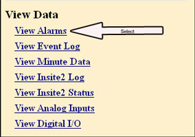
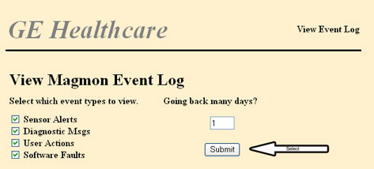
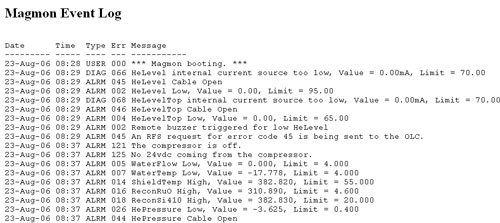
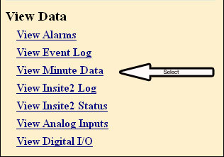
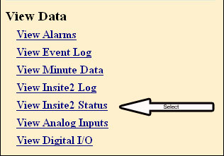
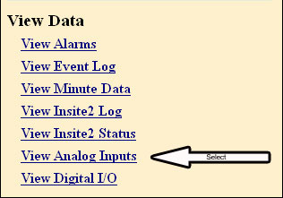
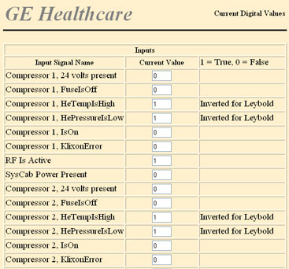

GE Exclusive Use Only
Direction 5670000, Rev# 1
Optima MR450w 1.5T Service Methods
Module Version 1.0, Version Date 4/16/07
GE Exclusive Use Only |
The View Alarms screen displays the alarm or fault conditions that are currently present on the Magmon3. If faults are present, the list will display them in order of importance with the most serious faults at the top of the list.
Click View Alarms from the View Data menu. See Illustration 1 and Illustration 2.
Illustration 1: View Data Options / View Alarms

Illustration 2: Example of View Alarms

The Magmon3 maintains a log of its events. The contents of the event log can be viewed on the web interface. The View Event Log page has a filter to select what type of events should be displayed and how many days of events should be displayed. The Magmon3 must be running in Proprietary Mode and you must be connected and logged into the Magmon3 with your laptop.
Illustration 3: View Data / View Event Log Option

Click View Event Log from the View Data menu. See Illustration 3.
Select the event type(s) you wish to view. Enter the number of days to display and click [Submit]. See Illustration 4.
Illustration 4: View Magmon Event Log

| NOTE: | The selected events will be displayed in one long list. See Illustration 5 for an example of the output. |
Illustration 5: Event Log Display

The Magmon3 reads each of its sensors once per minute and saves this data internally. The Magmon3 will stores up to one month of minute data.
Click View Minute Data from the View Data menu. See Illustration 6.
Illustration 6: View Data Options / View Minute Data

Enter the number of hours and starting point, as in Illustration 7. Click [View Data].
Illustration 7: View Minute Data Selections

| NOTE: | The Magmon3 only shows this data as text (see Illustration 8). The legend
located at the beginning of the log provides the definition for the
column headers and is dependent on the Magnet Type. There is no graphing function; however, the data is displayed in a format that makes it easy to cut and paste the data into a spreadsheet, where it can be easily graphed. |
Illustration 8: Minute Data - Example Output

Select Minute Data Help or Error Codes to view the definition of the codes listed in the screen output (see Illustration 9).
Illustration 9: Minute Data - Example Output

The View Insite2 Log page shows activity related to the Magmon3 connecting to the back-office and uploading data. Data in this log is lost when the Magmon3 is turned off .
The View Insite2 Status page shows whether the InSite2 agent is running or not.
Illustration 10: View Data Options / View InSite2 Status

Click View Insite2 Status from the View Data menu. See Illustration 11.
Illustration 11: InSite2 Status History Output Example

| NOTE: | For a complete listing of InSite2 Status Messages and service actions, go to Troubleshooting Section 2, “Troubleshooting Connectivity Issues Using 'View InSite2 Status'.” |
The View Analog Inputs page displays the current values seen by the Magmon3's analog inputs. The page automatically updates several times a minute to keep the readings current. This page is a diagnostic aid to confirm that the sensors are properly connected and configured.
Illustration 12: View Data Options / View Analog Inputs

Click View Analog Inputs from the View Data menu. See Illustration 12 and Illustration 13.
Illustration 13: Analog Inputs

The View Digital I/O page displays the current values seen by the Magmon3's digital inputs and outputs. The page automatically updates several times a minute to keep the readings current. This page is a diagnostic aid to confirm that the I/O lines are properly connected and configured.
Illustration 14: View Data Options / View Digital I/O

Click View Digital I/O from the View Data menu. See Illustration 14 and Illustration 15.
Illustration 15: Digital I/O Example
